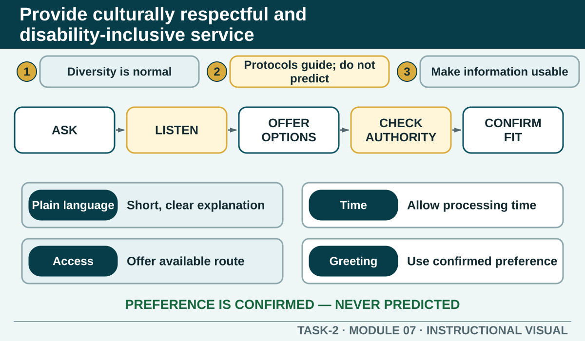

Provide culturally respectful and disability-inclusive service
Adapt communication and access respectfully without turning cultural information, disability or customer profiles into assumptions.
Learning intention
What success looks like
Explain diversity and cultural awareness in a hospitality service context.
Use cultural-protocol information as a prompt for respect rather than a rule about an individual.
Offer assistance and communication options without taking control away from the customer.
Recognise an inclusive-service issue that requires authorised support or escalation.
Core ideas
Build the complete picture
1
Diversity is normal in Australian hospitality
2
Protocols guide awareness, not predictions
3
Make information easier to use
4
Ask before assisting
Visual explanation
Provide culturally respectful and disability-inclusive service

Show that inclusive service starts by asking, then adapts communication or access through authorised options.
Worked example
Protect dignity, choice and privacy
Inclusive service gives the customer useful choices without drawing unnecessary attention to them. Ask relevant questions quietly where appropriate and record only the information required by the authorised system.
A customer asks for the menu to be read aloud. The worker asks whether they would like all options or a particular section, then reads the information accurately without asking why assistance is needed.
Question the room
How should cultural-protocol information be used in customer service?
As a fixed rule for every person who appears to belong to that group.
As background awareness that encourages respectful cues, relevant questions and confirmation.
It should never be considered because every customer interaction is identical.
Apply
Inclusive service decisions
Use the customer's words and preferred communication method. A respectful adaptation supports access; it does not diagnose, stereotype or lower the service standard.
Choose an action for each case.
Read the feedback.
Write one clarification phrase that protects dignity and accuracy.
Exit ticket
Action · evidence · next step
Respond to a fictional customer who asks for a different communication or access arrangement. Show how you would acknowledge, clarify, check authority, provide or escalate the option and confirm suitability.
One action I would take
The evidence I would check
The person or source I would confirm with
My next improvement
1 of 8
Speaker notes and delivery prompts
Open with this purpose: Adapt communication and access respectfully without turning cultural information, disability or customer profiles into assumptions.
Use Diversity is normal in Australian hospitality to connect prior learning to the first observable workplace decision.
Model Protect dignity, choice and privacy by walking through this supplied example: A customer asks for the menu to be read aloud. The worker asks whether they would like all options or a particular section, then reads the information accurately without asking why assistance is needed.
Ask: How should cultural-protocol information be used in customer service? Confirm the strongest response as As background awareness that encourages respectful cues, relevant questions and confirmation..
Listen for this misconception: Appearance does not establish identity or individual preference. This would turn awareness into stereotyping.
Move into Inclusive service decisions, then collect the saved response and finish with the source boundary: Authorised source note: Grounded in T2-S06, T2-S07 and the source-safe inclusive-service language in T2-S10. The module deliberately corrects the risk of treating broad protocol examples as facts about individuals.